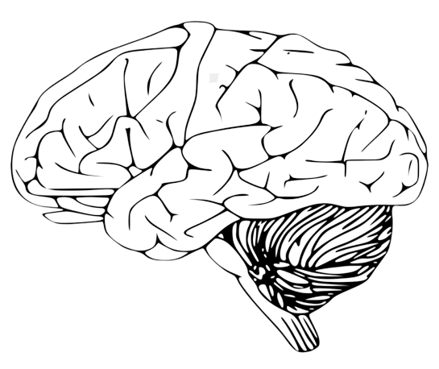

.png)

Working towards improving lives.
The initial goal of our technology is to help people with paralysis regain independence through the control of computers and mobile devices. Our devices are therefore currently being designed to one day give people the ability to communicate more easily via text or speech synthesis, to follow their curiosity on the web, or to express their creativity through photography, art, or writing apps.
The Link is a starting point for a new kind of brain-computer interface. As our technology develops, we want to be able to increase the channels of communication with the brain, accessing more brain areas and new kinds of neural information. We believe this technology has the potential to treat a wide range of neurological disorders, to restore sensory and motor function, and eventually to expand how we interact with each other and experience the world around us.
Processes visual information from our eyes.
Assists with the perception and interpretation of sound.
Helps process sense of touch.
Responsible for planning and executing voluntary movements.
We hope our first application will enable people with quadriplegia to control a point-and-click computer cursor. We believe there are many other potential future applications for the Link. These may include restoring motor, sensory, and visual function, as well as treatment of neurological disorders.
We have not yet begun clinical trials, and so we do not have safety data in humans, but safety has been at the core of the design process. In particular, the Link includes technical innovations intended to improve the safety of the surgical procedure compared to existing BCI devices or traditional neurosurgery. Here are a few examples: There is always risk associated with general anesthesia, and that risk is reduced by shortening the time of the procedure. We’re designing the Neurosurgical Robot so that it will be capable of efficient and reliable electrode insertion. Also, the robot is being designed to insert threads through a hole in the skull as small as 25 mm in diameter. Combined with other advancements in robotic surgical tooling, this may eventually allow us to eliminate general anesthesia and implant the device under conscious sedation. Inserting a device into the brain always carries some risk of bleeding. We are trying to reduce that risk by using micron-scale threads, inserted with a needle whose diameter is about the size of many neurons in the brain. Furthermore, because each thread is individually inserted, the Neurosurgical Robot is being designed so that it will aim each thread to avoid damaging blood vessels at or near the surface of the brain.
Neuralink is currently focused on developing medical devices. We believe these devices have the potential to help people with a wide range of injuries and neurological disorders, and we hope to develop treatments for many of these conditions in the coming years. We expect that as our devices continue to scale, and as we learn to communicate with more areas of the brain, we will discover new, non-medical applications for our BCIs. Neuralink's long-term vision is to create BCIs that are sufficiently safe and powerful that the general population would want to have them.
We understand that medical devices need to be secure and it takes serious engineering to prevent unwanted access to such devices. Security will be built into every layer of the product through strong cryptography, defensive engineering, and extensive security auditing.
© NEUROTECH 2022 ALL RIGHTS RESERVED. PRIVACY POLICY TERMS OF USE